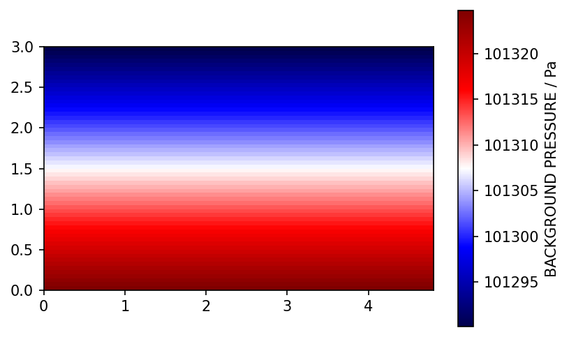
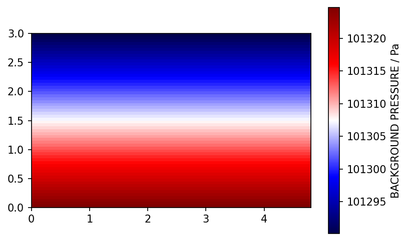

3.1. Fundamentals¶
This brief introduction into the fluid dynamics in a compartment fire is based on a characteristic setup and simulations carried out.
Setup¶
The compartment has an extension of
and is embeded in a computational domain of
The compartment is build out of individual obstacles, creating the walls, the floor and the ceiling. One of the walls contains an opening, see Fig. 3.1. The domain boundaries are defined as open boundaries.
{kind=link}
Fig. 3.1 Setup for the compartment fire example. There is only a single opening, i.e. the door. The surface with a predefined heat release rate is indicated in red.¶
The heat release rate is defined as a constant value of \(\mf 10~kW\) and the patch emitting the fuel has a surface temperature of \(\mf 100~^\circ C\).
For demonstration purposes, all quantities are visualised in the symmetry plane at \(\mf y=0\), see Fig. 3.2.
{kind=link}
Full FDS input file
&HEAD CHID='out_compartment', TITLE='Compartment Fire Example'/
!! &MESH IJK=96,72,60, XB=0.00,4.80,-1.80,1.80,0.00,3.00 /
&MESH ID='1' IJK=48,36,30 XB=0.0000,2.4000,-1.8000,0.0000,0.0000,1.5000 /
&MESH ID='2' IJK=48,36,30 XB=0.0000,2.4000,-1.8000,0.0000,1.5000,3.0000 /
&MESH ID='3' IJK=48,36,30 XB=0.0000,2.4000,0.0000,1.8000,0.0000,1.5000 /
&MESH ID='4' IJK=48,36,30 XB=0.0000,2.4000,0.0000,1.8000,1.5000,3.0000 /
&MESH ID='5' IJK=48,36,30 XB=2.4000,4.8000,-1.8000,0.0000,0.0000,1.5000 /
&MESH ID='6' IJK=48,36,30 XB=2.4000,4.8000,-1.8000,0.0000,1.5000,3.0000 /
&MESH ID='7' IJK=48,36,30 XB=2.4000,4.8000,0.0000,1.8000,0.0000,1.5000 /
&MESH ID='8' IJK=48,36,30 XB=2.4000,4.8000,0.0000,1.8000,1.5000,3.0000 /
&TIME T_END=100.0 /
&MISC TMPA=22. /
&SURF ID='BURNER', HRRPUA=250, TMP_FRONT=100., COLOR='FIREBRICK' /
&VENT XB=1.30,1.50,-0.10,0.10,0.05,0.05, SURF_ID='BURNER'
&REAC FUEL='METHANE',SOOT_YIELD=0.15 /
&OBST XB=2.70,2.75, -1.40,1.40, 0.05,2.00, COLOR='GRAY', TRANSPARENCY=0.5 / Wall with door or window
&OBST XB=0.20,0.25, -1.40,1.40, 0.05,2.00, COLOR='GRAY', TRANSPARENCY=0.5 / Wall
&OBST XB=0.00,4.80, -1.80,1.80, 0.00,0.05, COLOR='GRAY' / Floor
&OBST XB=0.20,2.75, -1.40,1.40, 2.00,2.05, COLOR='GRAY', TRANSPARENCY=0.5 / Ceiling
&OBST XB=0.20,2.75, -1.46,-1.40, 0.05,2.05, COLOR='GRAY', TRANSPARENCY=0.5 / Wall
&OBST XB=0.20,2.75, 1.40,1.46, 0.05,2.05, COLOR='GRAY', TRANSPARENCY=0.5 / Wall
&HOLE XB=2.65,2.85,-0.20,0.20, 0.05,1.80 / Door Opening
&VENT DB='XMIN',SURF_ID='OPEN'/
&VENT DB='XMAX',SURF_ID='OPEN'/
&VENT DB='YMIN',SURF_ID='OPEN'/
&VENT DB='YMAX',SURF_ID='OPEN'/
&VENT DB='ZMIN',SURF_ID='OPEN'/
&VENT DB='ZMAX',SURF_ID='OPEN'/
&SLCF PBY=0.0, QUANTITY='TEMPERATURE', CELL_CENTERED=.TRUE. /
&SLCF PBY=0.0, QUANTITY='PRESSURE', CELL_CENTERED=.TRUE. /
&SLCF PBY=0.0, QUANTITY='VELOCITY', CELL_CENTERED=.TRUE. /
&SLCF PBY=0.0, QUANTITY='U-VELOCITY', CELL_CENTERED=.TRUE. /
&SLCF PBY=0.0, QUANTITY='V-VELOCITY', CELL_CENTERED=.TRUE. /
&SLCF PBY=0.0, QUANTITY='W-VELOCITY', CELL_CENTERED=.TRUE. /
&SLCF PBY=0.0, QUANTITY='BACKGROUND PRESSURE', CELL_CENTERED=.TRUE. /
&SLCF PBY=0.0, QUANTITY='DENSITY', CELL_CENTERED=.TRUE. /
&SLCF PBY=0.0, QUANTITY='ENTHALPY', CELL_CENTERED=.TRUE. /
&SLCF PBY=0.0, QUANTITY='HRRPUV', CELL_CENTERED=.TRUE. /
&SLCF PBY=0.0, QUANTITY='INTERNAL ENERGY', CELL_CENTERED=.TRUE. /
&SLCF PBY=0.0, QUANTITY='SENSIBLE ENTHALPY', CELL_CENTERED=.TRUE. /
&SLCF PBY=0.0, QUANTITY='SPECIFIC ENTHALPY', CELL_CENTERED=.TRUE. /
&SLCF PBY=0.0, QUANTITY='SPECIFIC HEAT', CELL_CENTERED=.TRUE. /
&SLCF PBY=0.0, QUANTITY='VISCOSITY', CELL_CENTERED=.TRUE. /
&SLCF PBY=0.0, QUANTITY='IDEAL GAS PRESSURE', CELL_CENTERED=.TRUE. /
&SLCF PBY=0.0, QUANTITY='KOLMOGOROV LENGTH SCALE', CELL_CENTERED=.TRUE. /
&SLCF PBY=0.0, QUANTITY='MOLECULAR VISCOSITY', CELL_CENTERED=.TRUE. /
&SLCF PBY=0.0, QUANTITY='SUBGRID KINETIC ENERGY', CELL_CENTERED=.TRUE. /
&SLCF PBY=0.0, QUANTITY='VORTICITY X', CELL_CENTERED=.TRUE. /
&SLCF PBY=0.0, QUANTITY='VORTICITY Y', CELL_CENTERED=.TRUE. /
&SLCF PBY=0.0, QUANTITY='VORTICITY Z', CELL_CENTERED=.TRUE. /
&TAIL /
Flow¶
import numpy as np
import matplotlib.pyplot as plt
import fdsreader
plt.rcParams['figure.dpi'] = 150
path_to_data = '../../../../data/compartment/pressure_01/rundir/'
sim = fdsreader.Simulation(path_to_data)
list_q = ['U-VELOCITY', 'V-VELOCITY', 'W-VELOCITY']
it = sim.slices[0].get_nearest_timestep(250)
for q in list_q:
slice = sim.slices.filter_by_quantity(q)[0]
print(slice)
### fds / fdsreader BUG workaround BEGIN
### Issue due to SLCF located at MESH boundary
to_del = []
for s in slice:
if s.extent._extents[1][0] > 0:
to_del.append(s.mesh)
for m in to_del:
del slice._subslices[m]
extent = (slice.extent[0][0], slice.extent[0][1],
slice.extent[2][0], slice.extent[2][1])
# print(extent)
### fds / fdsreader BUG workaround END
slice_data = slice.to_global()
v_abs_max = np.max(np.abs(slice_data[it]))
plt.imshow(slice_data[it].T,
vmin = -v_abs_max, vmax = v_abs_max,
origin='lower',
extent=extent,
cmap='seismic')
q = slice.quantity.quantity
u = slice.quantity.unit
plt.colorbar(label=f"{q} / {u}")
plt.show()
Slice([3D] cell_centered=True, extent=Extent([0.00, 4.80] x [0.00, 0.05] x [0.00, 3.00]))
Slice([3D] cell_centered=True, extent=Extent([0.00, 4.80] x [0.00, 0.05] x [0.00, 3.00]))

Slice([3D] cell_centered=True, extent=Extent([0.00, 4.80] x [0.00, 0.05] x [0.00, 3.00]))

u_slice = sim.slices.filter_by_quantity('U-VELOCITY')[0]
slice_data = u_slice.to_global()
x0 = 2.7
ix = u_slice.get_nearest_index('x', x0)
print(f'Index in x-direction next to x={x0} is {ix}.')
z0 = 1.5
iy = u_slice.get_nearest_index('y', z0)
print(f'Index in z-direction next to z={z0} is {iy}.')
Index in x-direction next to x=2.7 is 54.
Index in z-direction next to z=1.5 is 35.
instant_values = slice_data[:, ix, iy]
n_a = 51
average_values = np.convolve(instant_values, np.ones(n_a)/n_a, mode='valid')
plt.plot(u_slice.times, instant_values, '.', color='grey', alpha=0.5, label='instanteneous values')
plt.plot(u_slice.times[n_a//2:-(n_a//2)], average_values, label='moving average')
plt.xlabel('Time / s')
plt.ylabel('Velocity Component $\sf v_x$ / m/s')
plt.grid()
plt.legend()
plt.title(f'Values at position (x,z)=({x0} m, {z0} m)');
z_max = 2.0
iz_max = u_slice.get_nearest_index('y', z_max)
### TODO: quick solution, needs fix
h = np.arange(0, z_max, 0.05)
list_t = [10, 25, 50, 100, 250]
for t in list_t:
it = sim.slices[0].get_nearest_timestep(t)
plt.plot(slice_data[it, ix, 0:iz_max+5], h, label=f't={t}')
plt.xlabel('Velocity Component $\sf v_x$ / m/s')
plt.ylabel('Height / m')
plt.grid()
plt.legend()
<matplotlib.legend.Legend at 0x118679d90>
Pressure¶
list_q = ['PRESSURE', 'BACKGROUND PRESSURE']
it = sim.slices[0].get_nearest_timestep(250)
for q in list_q:
slice = sim.slices.filter_by_quantity(q)[0]
# print(slice)
### fds / fdsreader BUG workaround BEGIN
### Issue due to SLCF located at MESH boundary
to_del = []
for s in slice:
if s.extent._extents[1][0] > 0:
to_del.append(s.mesh)
for m in to_del:
del slice._subslices[m]
extent = (slice.extent[0][0], slice.extent[0][1],
slice.extent[2][0], slice.extent[2][1])
# print(extent)
### fds / fdsreader BUG workaround END
slice_data = slice.to_global()
if np.min(slice_data[it]) < 0:
v_abs_max = np.max(np.abs(slice_data[it]))
vmin = -v_abs_max
vmax = v_abs_max
else:
vmin = np.min(slice_data[it])
vmax = np.max(slice_data[it])
plt.imshow(slice_data[it].T,
vmin = vmin, vmax = vmax,
origin='lower',
extent=extent,
cmap='seismic')
q = slice.quantity.quantity
u = slice.quantity.unit
plt.colorbar(label=f"{q} / {u}")
plt.show()
 

Other Quantities¶
list_q = ['TEMPERATURE', 'DENSITY', 'KOLMOGOROV LENGTH SCALE', 'SUBGRID KINETIC ENERGY', 'VORTICITY Y']
it = sim.slices[0].get_nearest_timestep(250)
for q in list_q:
slice = sim.slices.filter_by_quantity(q)[0]
# print(slice)
### fds / fdsreader BUG workaround BEGIN
### Issue due to SLCF located at MESH boundary
to_del = []
for s in slice:
if s.extent._extents[1][0] > 0:
to_del.append(s.mesh)
for m in to_del:
del slice._subslices[m]
extent = (slice.extent[0][0], slice.extent[0][1],
slice.extent[2][0], slice.extent[2][1])
# print(extent)
### fds / fdsreader BUG workaround END
slice_data = slice.to_global()
if np.min(slice_data[it]) < 0:
v_abs_max = np.max(np.abs(slice_data[it]))
vmin = -v_abs_max
vmax = v_abs_max
cmap='seismic'
else:
vmin = np.min(slice_data[it])
vmax = np.max(slice_data[it])
cmap='viridis'
plt.imshow(slice_data[it].T,
vmin = vmin, vmax = vmax,
origin='lower',
extent=extent,
cmap=cmap)
q = slice.quantity.quantity
u = slice.quantity.unit
plt.colorbar(label=f"{q} / {u}")
plt.show()